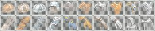

-[Icon Pack]- Items
The item icon set is used to display the various "Items" that can be found in the game. There are several styles to choose from.
Bobs
This set of icons was created by BobsVault. They use a square border style like the one in the original Keeg icons with a transparent background. The icon images are those found in the classic Mythic icon set.
Bobs (New)
This set of icons was created by BobsVault. They use a square border style like the one in the original Keeg icons with a transparent background. The icon images are those found in the new Mythic icon set.
Edaethx
This set of icons was created by Edaethx. They use a square border with a transparent background. The icon images are those found in the classic Mythic icon set.
Emerikol
This set of icons was created by Maliri for the Emerikol UI. They use a round border with a transparent background. The icon images are those found in the classic Mythic icon set that have been modified to fit within the circular border.

Icz
The Item icon set packaged with the Icz and Mxn UIs is actually the same as those created by Ceribis for the Keeg UI.
Keeg
This set of icons was created by Ceribis for the Keeg UI. They use a square gray border with a custom gray background. The icon images are those found in the classic Mythic icon set.
Keeg (New)
This set of icons was created by Ceribis for the Keeg UI. They use a square gray border with a custom gray background. The icon images are those found in the new Mythic icon set.
Lexana
The Item icon set packaged with the Lexana icons is actually the same as those created by Bobsvault. They use a square border style like the one in the original Keeg icons with a transparent background. The icon images are those found in the classic Mythic icon set.
Viddi
This set of icons was created for the Viddi UI. They use a square white border with a transparent background. The icon images are those found in the classic Mythic icon set.
zMythic (Classic)
This set of icons was created by Mythic. The icon images are the classic or original style that was available before the new style icons were introduced.

zMythic (New)
This set of icons was created by Mythic. The icon images are the new style and are the default used by the game client.
